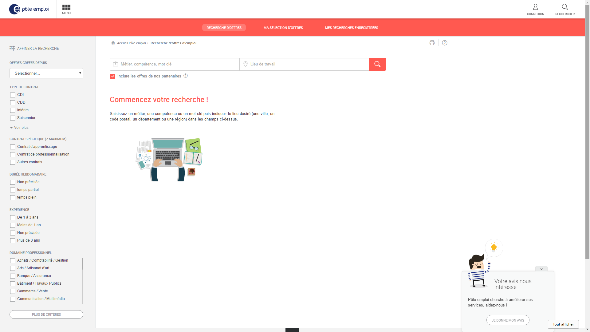
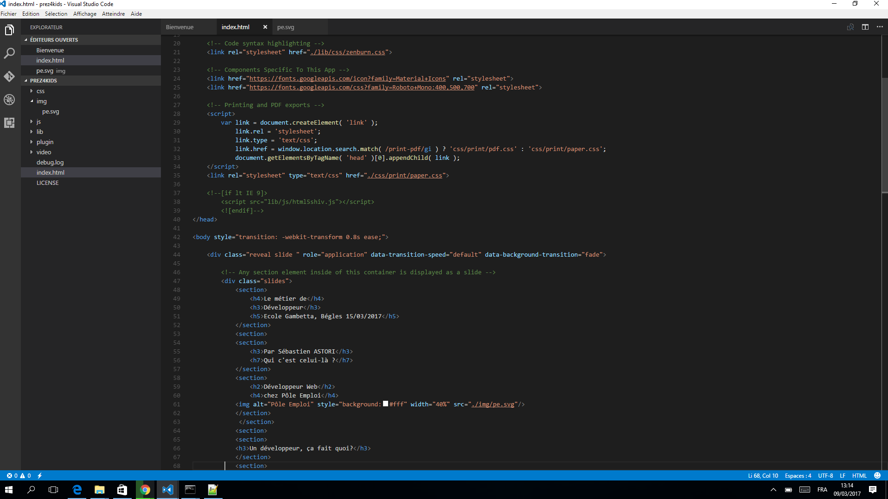
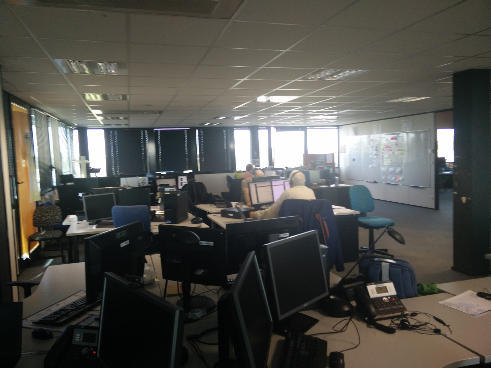
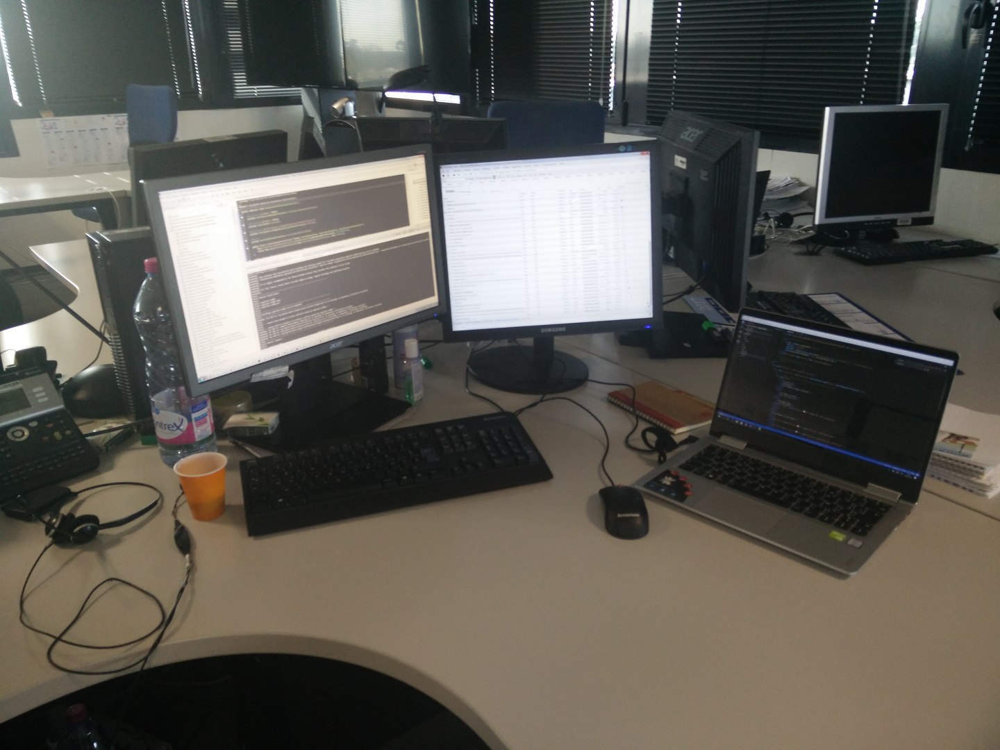
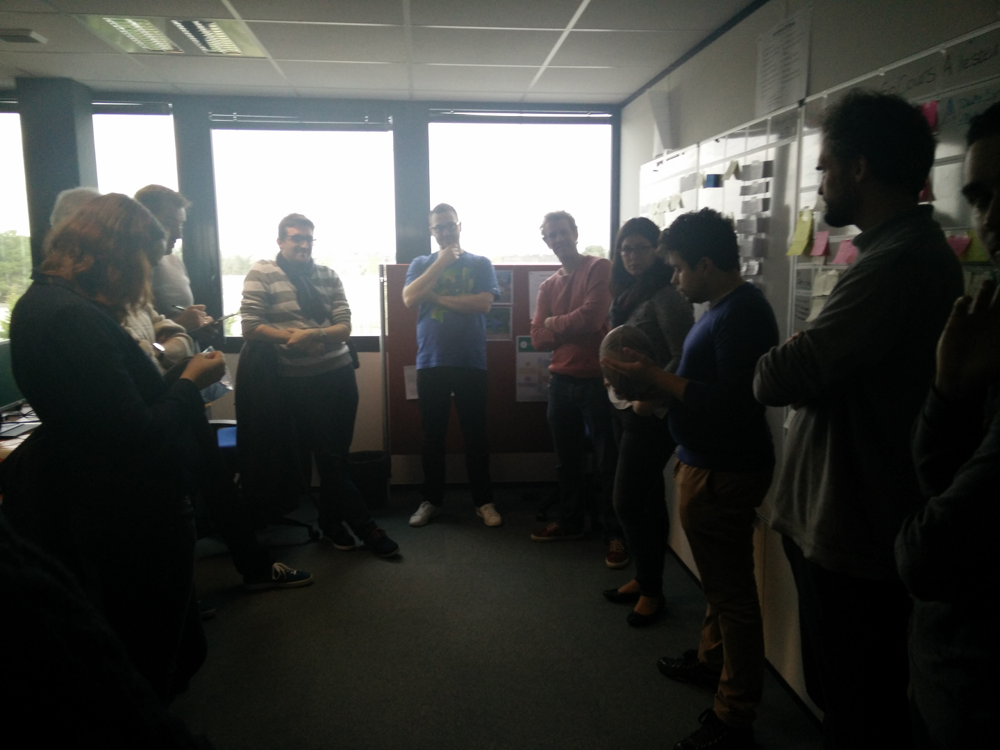
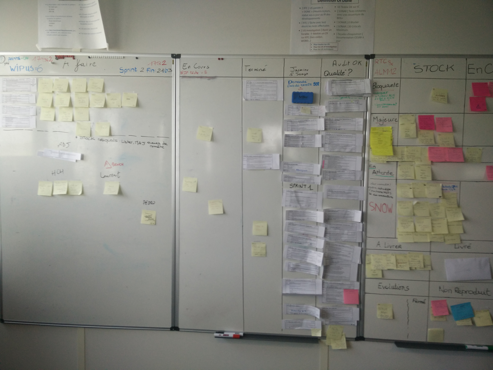
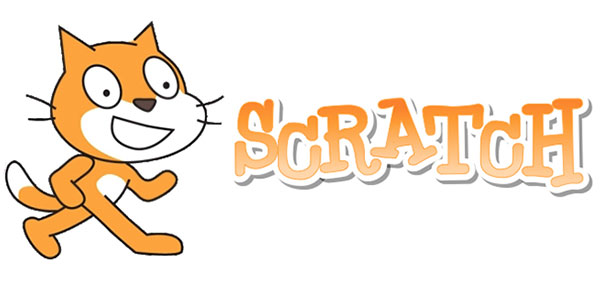

Ca crée des sites internet,des applications ou des jeux.

en utilisant un language informatique (une langue pour parler avec l'ordinateur).

Un développeur, ça travail où?
Dans un grand bureau, un openspace

plusieurs écrans d'ordinateur

Un développeur, ça travail seul?
Non,la plupart du temps en équipe.

et tableau pour se partager le travail

Comment devient-on developpeur?
Aprés le BAC
(Bac S dans mon cas car l'informatique c'est beaucoup de math).
DUT Informatique ou école d'ingénieur
Et on continu à apprendre tous les jours, car l'informatique évolue
Vous voulez commencer à developper en s'amusant
en demandant à vos parents https://scratch.mit.edu/+ des applications pour téléphone portableet quand vous connaitrez un languagehttps://www.codingame.com/